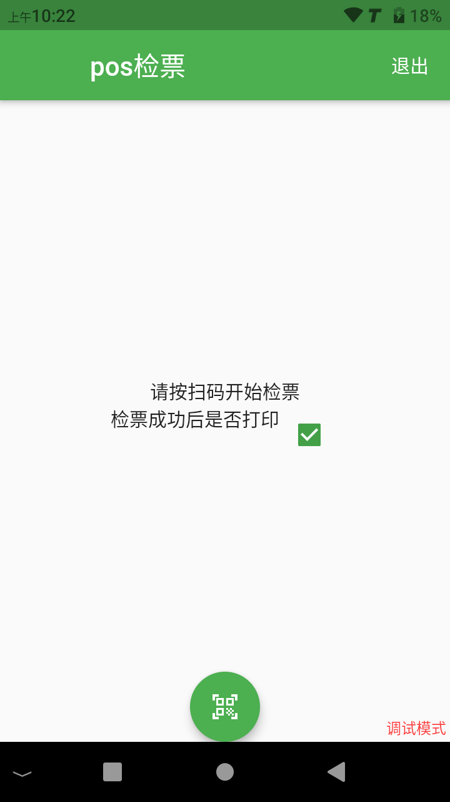
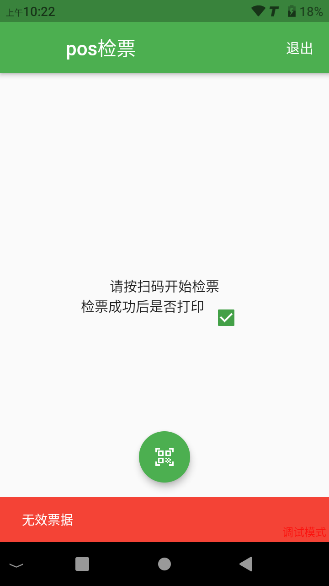

Handheld Ticket Inspector (POS) User Guide
In addition to turnstiles, handheld ticket inspectors (POS) provide a more flexible and mobile ticket inspection method, suitable for entrances without fixed turnstiles, temporary events, or for handling abnormal ticketing.
Step 1: Background Configuration
Before using the handheld ticket inspector, you must complete the corresponding device account creation and permission configuration in the ticketing system background.
1. Create a ticket inspection device account
For each handheld ticket inspection terminal, a corresponding "ticket inspection device" account needs to be created in the background.

About inbound/outbound settings When creating a device, you need to specify it as "inbound" (ie, ticket inspection for entry) or "outbound" (ie, ticket inspection for exit). If your business scenario requires recording the entry and exit of tourists, you need to create different ticket inspection device accounts for the entrance and exit.
2. Set the tickets that can be inspected
Important: For security and management reasons, the ticket inspection device cannot inspect any tickets by default. You must explicitly set the "inspectable ticket" range for each created ticket inspection device account. Unauthorized tickets will be prompted as invalid even if they are scanned with this device.
Step 2: Device Operation Process
1. Initial configuration and login
Set the server address: After turning on the machine for the first time or resetting it, click the gear icon in the upper right corner of the login page, and enter your background server URL address in the pop-up window.

Login: Use the ticket inspection device account and password you created in the background to log in.

2. Ticket inspection operation
Prepare for ticket inspection: After logging in, the device enters the main ticket inspection interface. The interface will display the current device name, inbound/outbound mode, the number of inspections on the day, and other information. 
Scan code for verification: Point the scanning head at the top of the device at the QR code on the electronic ticket or paper ticket presented by the tourist, and press the physical scanning button on the side of the device. The device will emit a prompt tone and display the verification result.
3. Ticket inspection results
Ticket inspection successful: The screen will display ticket type information, available number of people, etc., with a success prompt. If the printing function is enabled, the device will automatically print a confirmation slip with information such as ticket type and time.


Ticket inspection failed: If the ticket is invalid (e.g., used, expired, not a ticket type that can be inspected by this device, etc.), the screen will display a corresponding error message, accompanied by a failure prompt tone.
4. Function settings
On the main ticket inspection interface, you can set some common functions, for example, you can decide whether to automatically print a confirmation slip after a successful ticket inspection through a switch.
